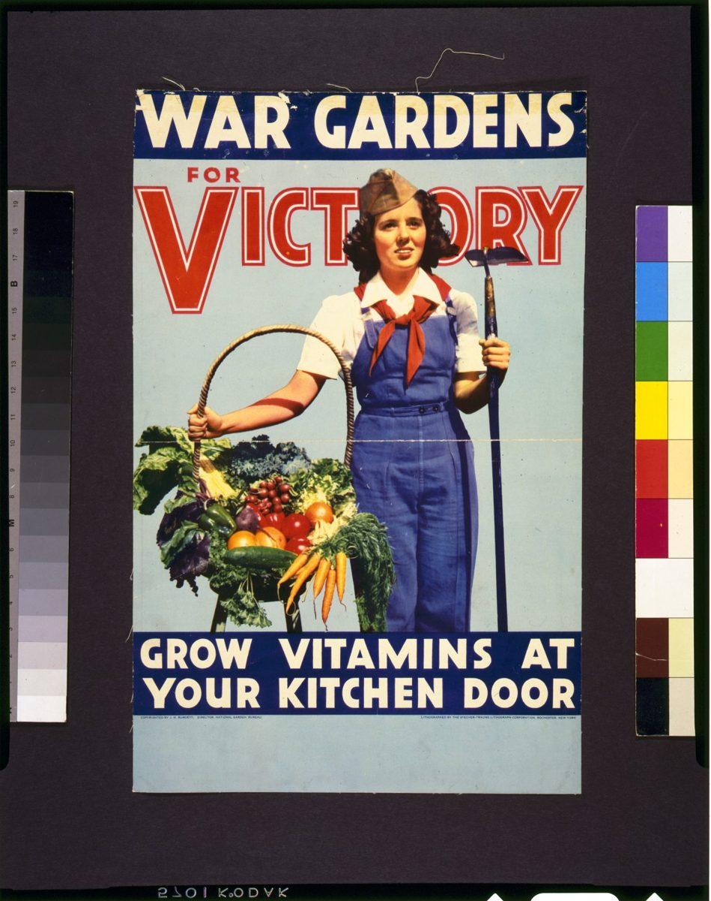

Disclosure: some links on this site are affiliate links. As an Amazon Associate I earn from qualifying purchases, at no extra cost to you.
How to Freeze Fresh Herbs
Freezing keeps soft herbs like basil, parsley, chives and dill closer to fresh flavor than drying does. Frozen herbs go limp when thawed, so they are best stirred straight from the freezer into soups, sauces and stews. Keep herb-and-oil cubes frozen until you use them.

War gardens for victory--Grow vitamins at your kitchen door · Photo: Library of Congress (no known restrictions)